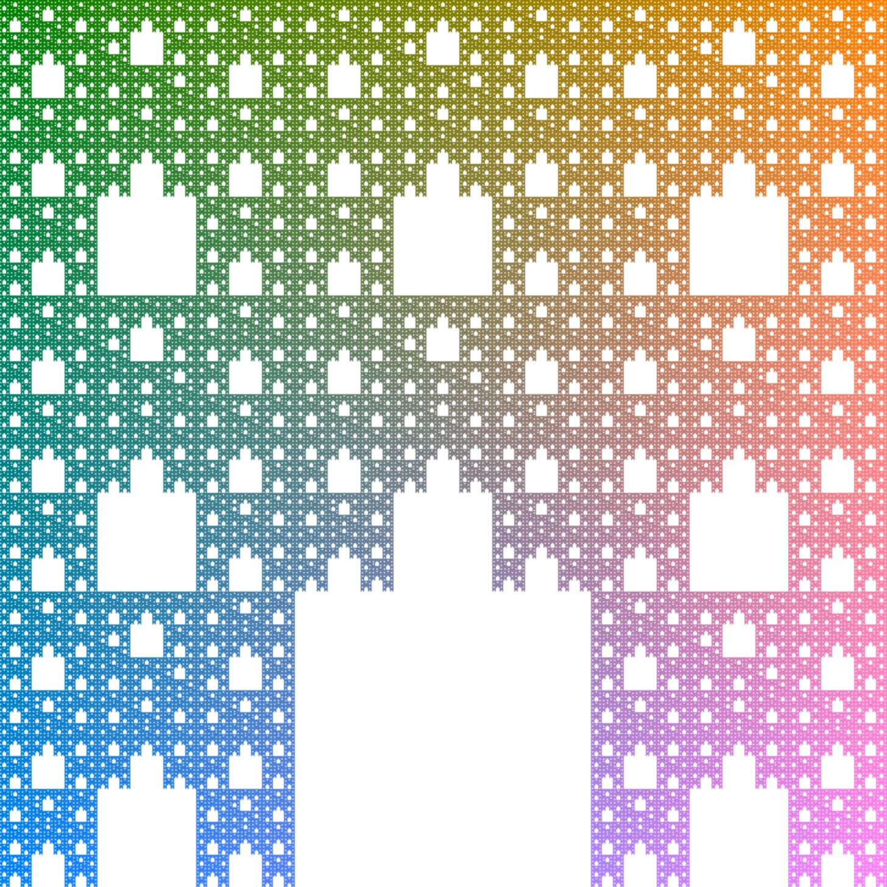

CS 262 - Fall 2020 -
Assignment #1
Part 10: Draw a fractal
Back to the main assignment page
Your task is to generate a fractal image recursively
from scratch (not based on an existing image), similarly to what we
did in Lab 3. However, in this assignment, you will take advantage of
the high resolution of the image by drawing one pixel at a
time (instead of one '*' at a time).
In this part, you must complete the
provided drawFractal() method as well as one or more
helper methods that you can design as you please. Do remember that you
MUST use recursion in your solution.
For full credit, you must demonstrate that you spent a good amount of
time and effort to design and implement an interesting looking fractal
(see one example below) that takes advantage of colors and multiple
levels of recursion.

You may NOT load any pictures in this part. Your fractal must be drawn
one pixel at a time. But you are not limited to square fractals. Be
creative! Have fun!
If you are not sure what is allowed
and what is not, just ask me.
Back to the main assignment
page